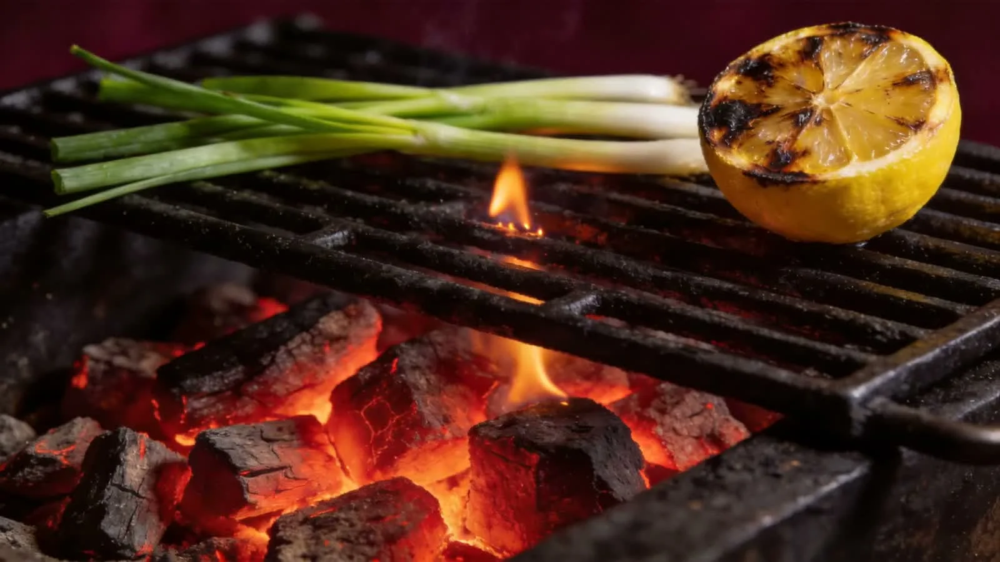

An appetite for the unhurried
The kind of evening
you make room for.
E
& S
& S
A table worth gathering around. Ingredients with something to say. Food that lets the fire do a little of the talking.
Come to the table ↗
A little heat changes everything.Find your fit ↓
Make an evening of it
Your table.
Your kind of night.
A quiet corner
Leave room for conversation.
A slower evening, a few plates to share and time at the table. Save a dining brief for your plans.
Pass it around
The best seat is together.
Build your evening around shared plates and conversation. Save this direction as a starting point for a group dinner.
Make a little occasion
Give the evening its own space.
Plan a gathering around the people, the food and the feeling. Save your celebration direction before arranging a venue.
EMBER & SALT